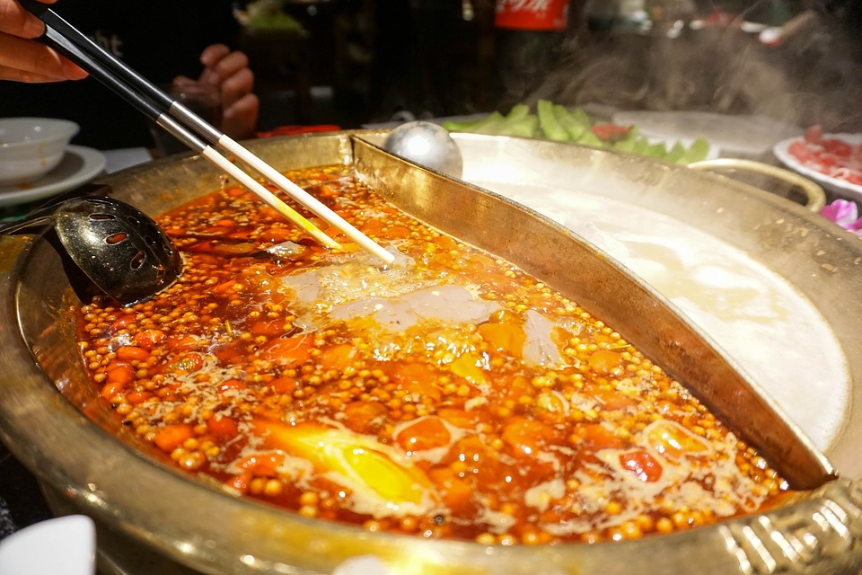

My Favorite Food
Sushi
Sushi is one of my favorite food. It is a Japanese dish of prepared vinegared rice with different kinds of meat, seafood or vegetable on top. "Kura Sushi" is my favorite place to eat sushi in Dallas area.

Hot Pot
Hot Pot is another kind of food I really like. Hot pot is a traditional and popular food, prepared with a large pot of hot soup with different choice of ingredients. You can put anything you like to cook in the hot pot. My favorite hot pot resturant is HaiDiLao.
